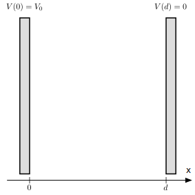
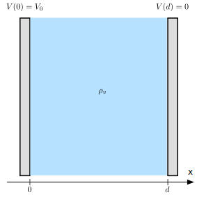
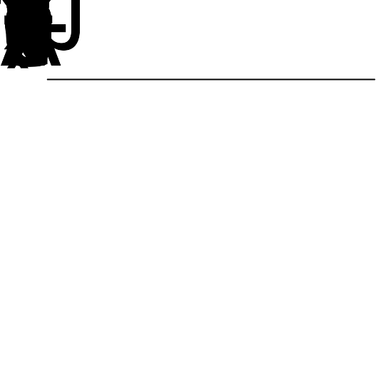
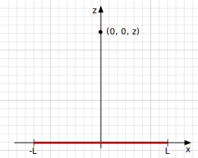

In one dimension, a linear curve is a solution to Laplace equation. Are there any other solutions that are not linear? In two dimensions, a plane may also be a solution to the Laplace equation. Are there any other solutions and what would that depend on?
Is it possible to have a discontinuous potential? Provide examples or arguments for why it is not possible. (Hint: \( \vec{E} = - \nabla V \)).
We will study a system in the \( xy \)-plane. At \( x=0 \) and \( x=L \) the scalar potential is \( V_0 = 0 \). The volume charge density between \( x=0 \) and \( x=L \) is zero, and the dielectric constant is \( \epsilon \).
a) Make a sketch of the system. What quantities is it useful to include in the sketch?
b) What is the scalar potential in the region between \( x=0 \) and \( x=L \)? Be very precise in how you determine this and what assumptions you make. What is the electric field in this region?
\( V(x,y) = 0 \)
There are no charges in this area. The electric scalar potential must satisfy Laplace equation \( \nabla^2 V = 0 \) with boundary conditions \( V(0,y) = 0 \) and \( V(L,y) = 0 \). The system is symmetric along the \( y \)-axis. We will therefore not have any \( y \)-dependence. Thus Laplace equation is \( \partial^2 V/\partial x^2 = 0 \). This has the solutions \( V(x) = Ax + B \). The boundary conditions gives that \( A = B = 0 \), and therefore \( V(x,y) = 0 \) for this system.
We now introduce a new feature in the system: The potential at \( x=L/2 \) is \( V_1 > V_0 \). The volume charge density is still zero, and the dielectric constant is \( \epsilon \).
c) Update your drawing to reflect this.
d) Find the scalar potential \( V(x,y) \) everywhere between \( x=0 \) and \( x=L \). What is the electric field?
\( V_1(x) = 2 V_1 x/L \) and \( E_1(x) = -2 V_1/L \) for \( 0 < x < L/2 \); \( V_2(x) = 2 (V_1/L) (L/2-x) + V_1 \) and \( E_2(x) = 2 V_1/L \) for \( L/2 < x < L \).
The system is still described by \( V(x,y) = A_ix + B_i \) in each of the regions (1) \( 0 < x < L/2 \) and (2) \( L/2 < x < L \). For the region \( 0 < x < L/2 \), the boundary conditions \( V(0) = 0 \) gives \( A_1 \cdot 0 + B_1 = 0 \) and therefore \( B_1 = 0 \). The other boundary condition \( V(L/2) = V_1 \) gives \( A_1(L/2) = V_1 \) and \( A_1 = 2 V_1 /L \), thus \( V(x) = 2 V_1 x/L \).
For the range \( L/2 < x < L \) we have that \( V(L) = 0 = A_2 L + B_2 \) and that \( V(L/2) = A_2 (L/2) + B_2 = V_1 \). Thus \( V(x) = 2 (V_1/L) (L/2-x) + V_1 \)
The electric field is \( E_1(x) = -\partial V/\partial x = -2 V_1/L \) for \( 0 < x < L/2 \) and \( E_2(x) = 2 V_1/L \) for \( L/2 < x < L \).
e) What kind of system could this situation represent?
A conductor with potential \( V_1 \) at \( x=L/2 \) and conductors at \( V=0 \) at \( x=0 \) and \( x=L \). (It can also be a sheet of charge at \( x=L/2 \). What would the charge be?)
f) What is the surface charge density on the surfaces at \( x=0 \), and \( x=L \). Discuss what happens at \( x=L/2 \).
\( \rho_a = 2 V_1 \epsilon/L \) on each side of \( x=L/2 \) and \( \rho_a = -2 V_1 \epsilon/L \) at \( x=0 \) and \( x=L \).
The surface charge density is given by the field, \( E_n = 2V_1/L = \rho_a/\epsilon \), and therefore \( \rho_a = 2 V_1 \epsilon/L \) at \( x=L/2 \) (on each side) and \( \rho_a = -2 V_1 \epsilon/L \) at \( x=0 \) and \( x=L \).
Consider a sphere with radius \( a \) with a charge \( Q \) uniformly distributed on its surface.
a) What is the electric field as a function of \( r \)? (Find the behavior for both \( r < a \) and \( r > a \))
\( E=0 \) for \( r < a \) and \( \vec{E} = Q/(4 \pi \epsilon r^2) \hat{r} \) for \( r > a \).
We can use Gauss' law. We assume that the field will have spherical symmetry. Inside the sphere, there will be no charge inside a spherical surface, hence the flux and the field is zero. Outside the sphere, the flux is \( 4 \pi \epsilon R^2 E = Q \), and therefore \( E = Q/(4 \pi \epsilon R^2) \).
b) What is the scalar potential, \( V(r) \) ?
\( V(r) = Q/(4 \pi \epsilon r) \) for \( r > a \) and \( V(r) = Q/(4 \pi \epsilon a) \) for \( r \le a \).
The scalar potential is found from \( V(r) = \int_r^{\infty} E(r) \, dr = Q/(4 \pi \epsilon r) \) for \( r > a \). When \( r < a \) the field is zero, hence the potential is the same inside the sphere as on the sphere boundary, \( V=Q/(4 \pi\epsilon a) \).
c) Does \( V(r) \) satisfy Laplace equation? (Where does it/does it not satisfy the equation).
We find the \( \nabla^2 \) operator for spherical coordinates from the formula collection: $$ \begin{equation} \nabla^2V = \frac{1}{r^2} \frac{\partial}{\partial r} \left( r^2 \frac{\partial V}{\partial r} \right) + \frac{1}{r^2 \sin \theta}\frac{\partial}{\partial \theta} \left( \sin \theta \frac{\partial V}{\partial \theta } \right) + \frac{1}{r^2 \sin^2 \theta} \frac{\partial^V}{\partial \phi^2} \; . \tag{4.1} \end{equation} $$ Here, \( V \) has no \( \theta \) or \( \phi \) dependence. Hence, we insert the solution into \( \nabla^2 V \). We start from the inside: $$ \begin{equation} \frac{\partial V}{\partial r} = \frac{\partial}{\partial r} \frac{Q}{4 \pi \epsilon r} = -\frac{Q}{4 \pi r^2} \tag{4.2} \end{equation} $$ We see that if we multiply with \( r^2 \) we get a constant, and hence \( \nabla^2 V = 0 \).
For \( r < a \) the solution is constant and hence trivially satisfies Laplace equation.
d) Use your result for \( E \) to find the surface charge at \( r=a \).
\( \rho_a = Q/(4 \pi a^2) \)
We know that the change in field across \( r=a \) corresponds to the surface charge here: \( D_{2n} - D_{1n} = \rho_a \). Immediately inside the field is zero, and immediately outside it is \( D = E\epsilon = Q/(4 \pi \epsilon a^2)\epsilon = Q/(4 \pi a^2) \). Hence the surface charge density is \( \rho_a = Q/(4 \pi a^2) \), which is indeed what we could recognize immediately.
The Python programs provided in the text provides skeleton programs to solve Laplace's equation on a rectangular area with a given set of Dirichlet boundary conditions on the boudary \( S \), \( V(S) \).
a) Apply the program to the test case where \( V(x=0,y)=0 \) and \( V(x=L,y)=V_1 \). How can you check that the results are correct? Find the exact solution and compare with the numerical results.
b) Use the program to find \( V \) and \( \vec{E} \) for the case when \( V=0 \) for \( x=0 \) and \( x=L \), and \( V=V_1 \) for \( y=0 \) and \( y=L \). Discuss the potential and field you get. Does it correspond to your intuition?
c) Use the program to explore a situation of choice. Predict what you will get first, and then run the program to test your intuition.
Vi ser på et system som består av to plane metallplater med avstand \( d=1 \) cm. Platene er mye større enn avstanden mellom dem. Den ene platen er tilkoblet jord (\( V= 0 \)) mens den andre platen har et påtrykt positivt potensial \( V_0 \).

a) I første omgang er mediet mellom platene luft (\( \epsilon_r = 1 \)). Det oppstår gjennomslag i luften når feltstyrken overskrider \( E_{tl}=3\times 10^6 \) V/m. Hva er den største spenningen \( V_0 \) som kan påtrykkes mellom platene?
\( 3\cdot 10^4 \) V
For at det skal oppstå gjennomslag må spenningen være større enn \( V_{tl} = E_{tl} d = 3\cdot 10^4 \) V
b) Du tenger å påtrykke en større spenning enn dette. Derfor planlegger du å fylle luftlomma mellom platene med en \( 1.0 \) cm tykk plate av porselen, som har en relativ permittivitet på \( \epsilon_r=7 \) og tåler en feltstyrke på \( E_{tp}=6\cdot 10^6 \) V/m.
Hvor stor spenning beregner du at du nå kan påtrykke mellom platene?
\( 6\cdot 10^4 \) V
Dette dielektriske mediet vil gi større spenningstoleranse fordi det tåler en høyere spenning: \( V_{tp} = E_{tp}d = 6\cdot 10^4 \) V. Det er også verdt å merke seg at det å legge inn et dielektrikum vil føre til at ladningen på kondensatorplaten vil øke med en faktor \( \epsilon_r \).
c) Du går på butikken for å kjøpe porselensplate, men de har bare en plate som er \( 9 \) mm tykk. Kan denne platen hjelpe deg? Begrunn svaret med en beregning.
Dette endrer situasjonen dramatisk, siden vi nå får en grenseflate mellom porselen og luft. Vi vet at \( D \)-feltet ikke bryr seg om permittiviteten til materialet, så vi kommer til å ha et konstant \( D \)-felt mellom platene. Dermed får vi at \( E_p = \frac{E_l}{\epsilon-r} \). Vi setter så opp uttrykket for spenningsfallet mellom metallplatene: $$ \begin{equation} V = E_l(d-d_p) + E_p d_p = E_l \left[ d-d_p \left(1-\frac{1}{\epsilon_r}\right)\right] \tag{4.3} \end{equation} $$
Siden \( E_p = \frac{E_l}{\epsilon-r} \) kommer vi til å ha det sterkeste \( E \)-feltet i lufta, og siden lufta attpåtil tåler mindre felt enn porselenet er det gjennomslag i lufta vi trenger å bekymre oss for. Derfor er den høyeste spenningen som kan tåles $$ \begin{align} V_{t} &= E_{tl} \left[ d-d_p \left(1-\frac{1}{\epsilon_r}\right)\right] \tag{4.4}\\ &= 3\times 10^6 \text{ V/m} \cdot (0.01\text{ m} -0.009\text{ m} \cdot (1-1/7)) \tag{4.5}\\ &= 6857 \text{ V} \tag{4.6} \end{align} $$
Dette er mye mindre enn vi tålte med bare luft imellom, og det skyldes at det dielektriske materialet tar mindre av spenningsfallet mellom platene pga høyere permittivitet. Dermet tvinges luften til å ta det meste av spenningsfallet, og det over en mye mindre distanse enn tidligere, slik at feltet blir større.
To plane metallplater med avstand \( d=1 \) cm har en jevnt fordelt romladningstetthet \( \rho_v = -10^{-5}\text{ C/m}^3 \) mellom seg. Mediet mellom platene har dessuten relativ permittivitet \( \epsilon_r=1 \). Den ene platen er tilkoblet jord (\( V=0 \)) mens den andre platen har et positivt potensial \( V_0 = 10 \) V.

a) Finn potensialet mellom platene som funksjon av \( x \) når vi antar at platene har uendelig stor utstrekning.
Poissons ligning gir en 2. ordens differensiallikning i en variabel. Løs denne med grensebetingelsene \( V(0) = V_0 \) og \( V(d) = 0 \).
Poissons likning er \( \nabla^2 V = -\frac{\rho}{\epsilon} \). Siden platene er store antar vi at \( V \) kun kommer til å være en funksjon av \( x \), slik at poissons likning reduseres til $$ \begin{equation} \frac{\partial^2 V}{\partial x^2} = -\frac{\rho}{\epsilon} \tag{4.7} \end{equation} $$ der \( \rho \) og \( \epsilon \) er konstanter i denne oppgaven.
Vi integrerer likningen to ganger, og får at $$ \begin{equation} V(x) = -\frac{\rho x^2}{2\epsilon} + c_1 x + c2. \tag{4.8} \end{equation} $$
Grensebetingelsene gir oss $$ \begin{align} V(0) &= c_2 = V_0 \tag{4.9}\\ V(d) &= -\frac{\rho x^2}{2\epsilon} + c_1 d + V_0 \tag{4.10} \end{align} $$ altså $$ \begin{align} c_1 &= \frac{\rho d}{2\epsilon} - \frac{V_0}{d} \tag{4.11}\\ c_2 &= V_0 \tag{4.12} \end{align} $$ Vi setter dette inn i den generelle løsningen og får $$ \begin{equation} V(x) = -\frac{\rho x^2}{2\epsilon} + \left(\frac{\rho d}{2\epsilon} - \frac{V_0}{d}\right)x + V_0 \text{ for } x \in [0,d] \tag{4.13} \end{equation} $$
b) Finn det elektriske feltet som funksjon av \( x \).
I elektrostatikken er generelt \( E=-\nabla V \). Siden vi har et endimensjonal system reduseres dette til $$ \begin{equation} \mathbf{E} = -\frac{\d V}{\d x}\x = \left[ \frac{\rho x}{\epsilon} - \left( \frac{\rho d}{2\epsilon} - \frac{V_0}{d} \right)\right]\x \tag{4.14} \end{equation} $$
Om vi setter inn for verdiene oppgitt i oppgaven, i tillegg til \( \epsilon = \epsilon_0 \approx 8.854 \cdot 10^{-12} \) F/m siden luft har omtrent samme permittivitet som vakuum, får vi $$ \begin{equation} \mathbf{E} \approx (-1.13 x+6.65)\x \text{ V/mm} \tag{4.15} \end{equation} $$
c) For hvilken verdi av \( x \) har potensialet sitt minimum? Finn \( V_{\text{min}} \).
\( V_{\text{min}} = -9.57 \) V
Potensialet \( V \) har ekstremalverdier der \( \frac{\d V}{\d x} = 0 \), dvs. \( E(x) = 0 \), som gir $$ \begin{equation} \frac{\rho x}{\epsilon} - \left( \frac{\rho d}{2\epsilon} -\frac{V_0}{d} \right) = 0. \tag{4.16} \end{equation} $$ Når vi løser denne likningen for \( x \) får vi $$ \begin{equation} x_{ekstremal} = \frac{2}{2}-\frac{V_0\epsilon}{\rho d} \approx 5.89 \text{ mm} \tag{4.17} \end{equation} $$
Vi ser at \( E \)-feltet er positivt til venstre for dette punktet, og negativt til høyre for dette punktet. Siden \( E = -\frac{\d V}{\d x} \) kan vi dermed konkludere at \( x_{ekstremal} \) er et bunnpunkt for potensialet. Dersom det var et topppunkt måtte vi ha lett etter ekstremalpunkter på randen av området.
Vi evaluerer \( V(x) \) i \( x_{min} = 5.89 \) mm, og finner at $$ \begin{equation} V_{min} = V(x_{min}) = -9.57 \text{ V} \tag{4.18} \end{equation} $$
d) Skissér potensialet \( V(x) \), og \( x \)-komponenten av det elektriske feltet som funksjon av \( x \).
Figuren under viser potensialet og feltet.

Koden som genererer plottet:
import numpy as np
import matplotlib.pyplot as plt
def V(x, d=0.01, V0=10, Vd=0, epsilon=8.854e-12, rho=-1e-5):
return -rho*x**2/(2*epsilon) + (rho*d/(2*epsilon) - V0/d)*x + V0
def E(x, d=0.01, V0=10, Vd=0, epsilon=8.854e-12, rho=-1e-5):
return rho*x/epsilon - (rho*d/(2*epsilon) - V0/d)
x = np.linspace(0, 0.01, 100)
plt.figure(figsize=(6, 6))
plt.subplot(211)
plt.axhline(0, color="k")
plt.plot(x*100, V(x))
plt.plot([0, 0.589], [-9.57, -9.57], "k--", linewidth=1)
plt.plot([0.589,0.589], [-9.57,0], "k--", linewidth=1)
plt.text(0.589, -10, "$V_{min} = -9.57$ V", verticalalignment="top", horizontalalignment="center")
plt.text(0.589, 1, "$x_{min}=5.89$ mm",horizontalalignment="center")
plt.ylim([-13, 11])
plt.xlabel("x (cm)")
plt.ylabel("V (V)")
plt.subplot(212)
plt.axhline(0, color="k")
plt.plot(x*100, E(x)/1000)
plt.plot([0,1], [0,0], "k--")
plt.plot([0.589,0.589], [-0.2,0.2], "k-")
plt.text(0.589, 1, "$x_{min}$",horizontalalignment="center")
plt.xlabel("x (cm)")
plt.ylabel("E (V/mm)")
plt.tight_layout()
En ladet stav strekker seg fra \( -L \) til \( L \) på \( x \)-aksen med linjeladningstettehet \( \rho_l \).

a) Punktet \( P \) ligger på \( z \)-aksen med koordinatene \( (0,0,z) \). Finn det elektriske feltet fra staven i punktet \( P \).
Vi deler opp staven i små biter og bruker Coulombs lov på hver av de små bitene. $$ \begin{equation} \mathbf{E} = \lim_{\Delta x \to 0} \sum_i \frac{\rho_l \Delta x_i}{4\pi \epsilon_0 r_i^2} \frac{\rvec_i}{r_i} \tag{4.19} \end{equation} $$ Der summen er slik at den får med seg hele staven fra \( -L \) til \( L \).
Dette er nøyaktig definisjonen av følgende integral: $$ \begin{equation} \int_{-L}^L \frac{\rho_l \d x}{4\pi\epsilon_0 r^2}\frac{\rvec}{r} \tag{4.20} \end{equation} $$
der \( \rvec = -x\x + z\z \), altså vektoren som peker fra ladningen \( \rho_l \d x \) og mot punktet der vi ønsker å beregne feltet, og \( r = |\mathbf{r}| = \sqrt{x^2+z^2} \). Dermed blir integralet $$ \begin{equation} \mathbf{E} = \int_{x=-L}^L \frac{\rho_l \d x}{4\pi\epsilon_0 (x^2+z^2)^\frac{3}{2}}(-x\x + z\z) \tag{4.21} \end{equation} $$ Siden (-x) er antisymmetrisk på integrasjonsområdet \( [-L, L] \), og resten av uttrykket er symmetrisk på det samme området, kommer \( x \)-komponenten av feltet til å kansellere. Derfor ser vi bare videre på \( z \)-komponenten. $$ \begin{align} \mathbf{E} &= \int_{x=-L}^L \frac{z\rho_l \d x}{4\pi\epsilon_0 (x^2+z^2)^\frac{3}{2}}\z \tag{4.22}\\ &= \frac{\rho_l z\z}{4\pi\epsilon_0} \left[ \frac{x}{z^2 \sqrt{x^2+z^2}}\right]_{-L}^L \z \tag{4.23}\\ &= \frac{L\rho_l}{2\pi\epsilon_0 z \sqrt{z^2+L^2}}\z \tag{4.24}\\ &= \frac{Q}{4\pi\epsilon_0 z \sqrt{z^2+L^2}} \tag{4.25} \end{align} $$ Der vi i den siste likheten har skrevet \( Q = 2L\rho_l \) der \( Q \) er stavens totale ladning. Selve integralet løser vi enten ved å bruke sympy/wolframalpha, eller på egenhånd med integrasjonsteknikker. I dette integralet fører det fram å gjøre to substitusjoner etter hverandre: \( u = \frac{x}{z} \) og \( u = \tan\theta \). Da vil vi ende opp med \( \int \cos\theta \d \theta = \sin\theta + C \), og innsatt for hva \( \sin\theta \) er for noe, får vi løsningen.
b) Hvordan forventer du at feltet vil se ut langt fra staven, dvs. for \( |z| >> L \). Ser uttrykket du har for feltet fornuftig ut i denne grensen?
Når \( z \gg L \) vil \( z \) dominere over \( L \) inne i rottegnet slik at \( z\sqrt{z^2+L^2}\approx z^2 \). Dermed blir feltet for \( z \gg L \) $$ \begin{equation} \mathbf{E} \approx \frac{Q}{4\pi\epsilon_0 z^2}\z \tag{4.26} \end{equation} $$ som er det samme som feltet fra en punktladning. Dette gir mening, siden staven ser mer og mer ut som et punkt jo lenger unna man er.
c) Hvordan ser feltet ut for en uendelig lang stav (\( L\to \infty) \)? Når er dette uttrykket gyldig?
Vi tar grenseverdien $$ \begin{align} &\lim_{L\to\infty} \frac{L}{\sqrt{z^2+L^2}} \tag{4.27}\\ &= \lim_{L\to\infty} \frac{L}{L\sqrt{\frac{z^2}{L^2}+1}} \tag{4.28}\\ &= \lim_{L\to\infty} \frac{1}{\sqrt{\frac{z^2}{L^2}+1}} \tag{4.29}\\ &= 1 \tag{4.30} \end{align} $$ slik at feltet i grensen der \( L\to\infty \) blir $$ \begin{equation} \mathbf{E} = \frac{\rho_l}{2\pi\epsilon_0 z} \z \tag{4.31} \end{equation} $$ Da vi to grenseverdien så vi at det avgjørende var å få \( \frac{z^2}{L^2} \) til å bli liten, så dette uttrykket er gyldig dersom man er veldig nærme staven sammenlignet med stavens lengde. Altså \( z \ll L \).
I sylinderkoordinater er Laplace likning gitt som $$ \begin{equation} \nabla^2 V = \frac{1}{r}\frac{\partial}{\partial r}\left(r \frac{\partial V}{\partial r} \right) + \frac{1}{r^2} \frac{\partial^2 V}{\partial \phi^2} + \frac{\partial^2 V}{\partial z^2} = 0 \; . \tag{4.32} \end{equation} $$ Vi skal i denne oppgaven se på et uendelig langt sylinderskall som ligger langs \( z \)-aksen som en modell for en kabel eller aksonet i en nervecelle.
a) Forklar hvorfor potensialet \( V \) kun kan avhenge av \( r \) og ikke av \( \phi \) eller \( z \).
b) Vi antar at potensialet er \( V_0 \) på innsiden av sylinderskallet ved \( r = a \) og \( V_1=0 \) på utsiden av sylinderskallet ved \( r = b \). Det er ingen frie ladninger i området mellom \( r=a \) og \( r=b \). Finn det elektriske potensialet som funksjon av \( r \) ved å løse Laplace likning.